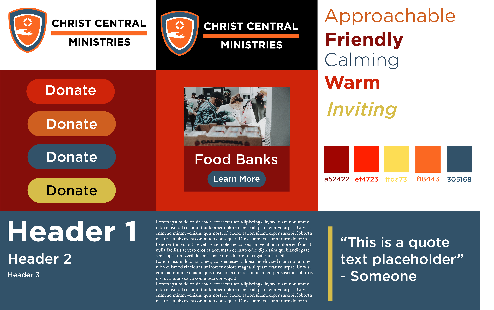

Call to Action and Style Tile
Call To Action
The main users need to see that they can get help, volunteer or donate. They will see that by using hierarchy to draw the attention to finding information the user needs. That being said, for my home page I plan to have three sections. The first section will be called something like find a location near me, the next section will be about volunteers, and the third section will be about events happening. The top left will be the logo and in the top right there will be a button for donating. The header will feature the about page that will drop down and show the different locations.
Style Tile
